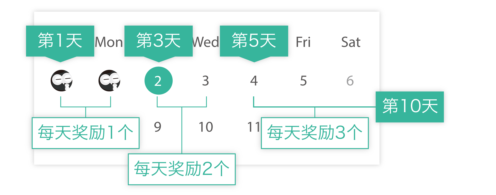
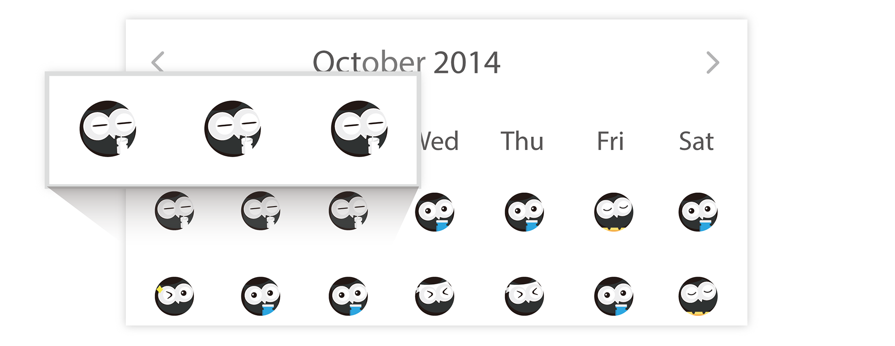
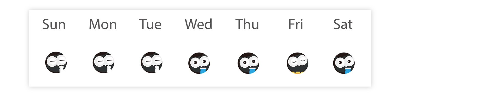
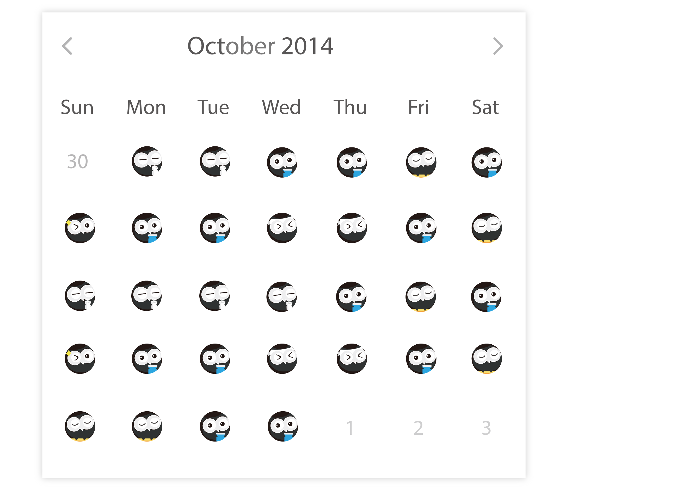

一、连续签到奖励
| - 第 1 天 | 每日奖励 1 个单词上限； |
| - 从第 3 天开始 | 每日奖励 2 个单词上限； |
| - 从第 5 天开始 | 每日奖励 3 个单词上限； |
| - 从第 10 天开始 | 每日奖励 4 个单词上限； |
| - 从第 30 天开始 | 每日奖励 5 个单词上限； |
| - 从第 100 天开始 | 每日奖励 6 个单词上限； |
奖励方式图例：

二，头像连连看抽奖
说明：如果你有抽中了连续一样的签到头像，将获得丰厚奖励，签到头像共有 5 个样式，每次签到时系统随机摇取：
- 获得 2 个连续一样的签到头像奖励 10 个单词上限；
- 获得 3 个连续一样的签到头像奖励 20 个单词上限；
- 获得 4 个连续一样的签到头像奖励 50 个单词上限；
- 获得 5 个连续一样的签到头像奖励 200 个单词上限；
- 获得 6 个连续一样的签到头像奖励 500 个单词上限；
- 获得 7 个连续一样的签到头像奖励 1000 个单词上限；
- 获得 8 个连续一样的签到头像奖励 2000 个单词上限；
- 获得 9 个连续一样的签到头像奖励 4000 个单词上限；
- 获得 10 个连续一样的签到头像奖励 8000 个单词上限。
奖励方式图例：

3 个连续一样的头像，奖励 20 个单词上限。
三，周满贯和月满贯奖励
一个星期满贯奖励 15 个单词上限；
一个月满贯奖励补签卡，如果已拥有 1 个补签卡，则奖励 30 个单词上限。
周满贯图例：

要求：周日至下周六连续七天签到。
月满贯图例：

要求：本月 1 号到本月最后一天连续签到。
四，分享例句和助记奖励
你分享的例句或助记被他人采纳，每增加 1 个采纳，获得 1 个单词上限奖励。
五，分享给好友奖励
你的分享页面，每增加 1 个独立访问，奖励 3 个单词上限；每增加 1 个独立下载按钮点击，奖励 1 个单词上限。
何为 “补签卡” ？
1. 补签卡可以把的连续签到天数改为最大连续签到天数；
如：你之前历史最高连续了 100 天，但是如果你断了签到，你的连续签到将从第 1 天开始重新累加。如果你使用了补签卡，你奖可以把你当前的连续签到的天数 1 天改为今天的签到加里斯最高的连续签到天数，总共 101 天。
2. 你最多同时持有一张补签卡，默认初始有一张补签卡。